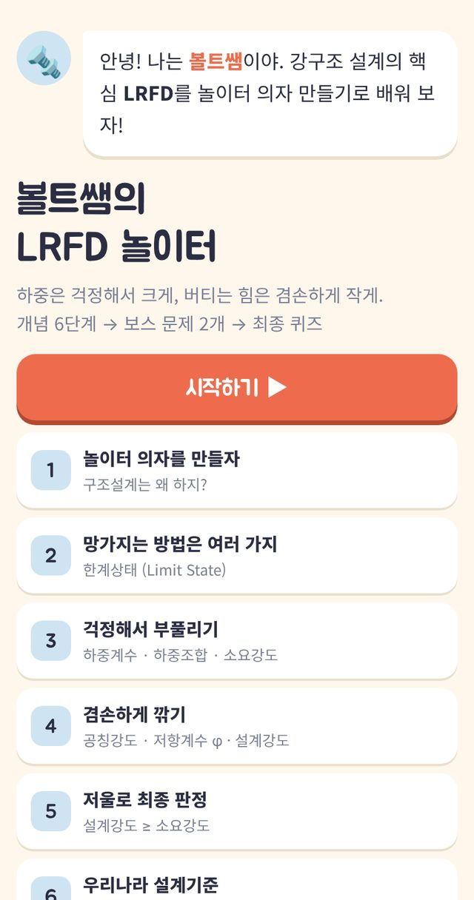
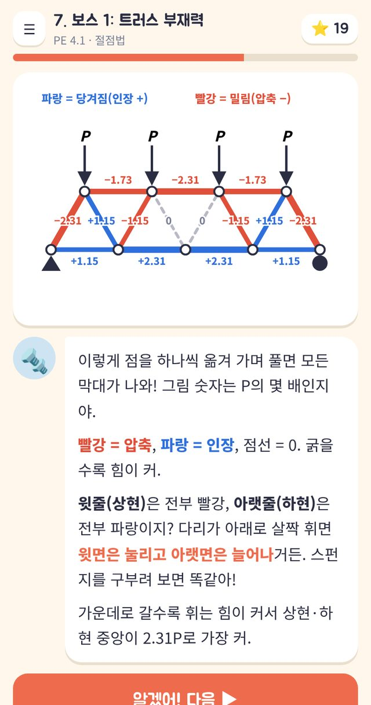
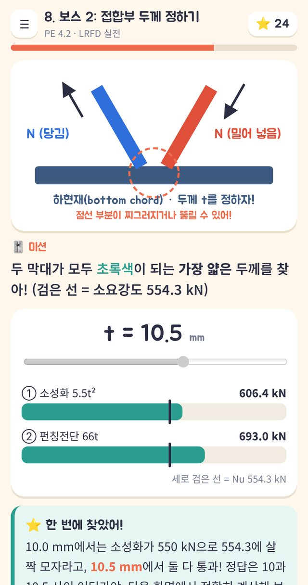
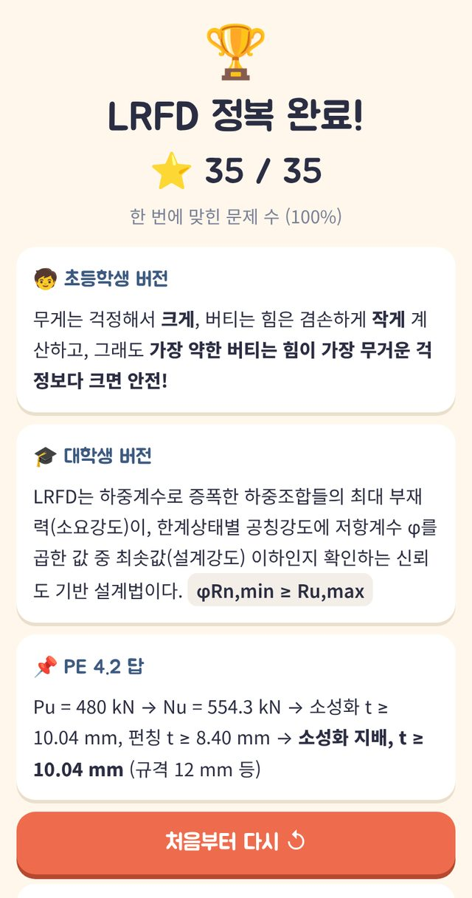
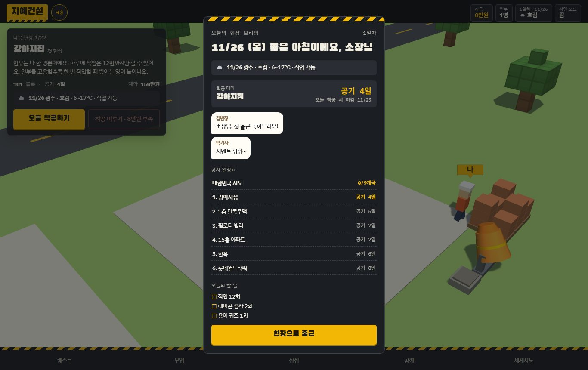

×−+ai-apps — 하반기 캡스톤
- 유형
- AI(Claude) 활용 캡스톤 과제 · 웹 앱 2개
- 시기
- 2026년 하반기
- 제작
- 건축공학전공 곽지예 · AI(Claude) 활용
- 만든 것
- 볼트쌤의 LRFD 놀이터 · 지예건설
- 형태
- 브라우저에서 바로 실행되는 HTML 파일 (지예건설은 three.js 3D)
- 바로 해 보기
- LRFD 놀이터 열기 ↗ · 지예건설 열기 ↗
AI(Claude)를 활용해 건축공학 내용을 직접 풀고, 지어 보며 배우는 웹 앱 두 개를 만들었습니다. 하나는 강구조 LRFD 설계법을 배우는 학습 게임, 다른 하나는 건설 현장을 운영해 보는 3D 게임입니다.
강구조설계 LRFD 단원(Practice Example 4)을 바탕으로 만든 학습 게임입니다. 캐릭터 ‘볼트쌤’이 놀이터 철제 의자를 예로 들어 설명하고, 장면마다 문제를 풀며 다음으로 넘어갑니다. 줄다리기, 사슬의 가장 약한 고리, 소나기용 우산처럼 일상의 비유로 개념을 잡은 뒤 실제 계산까지 이어지게 구성했습니다.
| 장면 | 주제 | 핵심 내용 |
|---|---|---|
| 1 | 구조설계는 왜 하지? | 버티는 힘 ≥ 무게 |
| 2 | 한계상태 | 극한 · 피로 · 사용성, 강재의 항복 · 파단 · 좌굴 |
| 3 | 하중계수 · 하중조합 · 소요강도 | 1.4D, 1.2D + 1.6L 중 가장 큰 값 (예: 420 vs 480 → 480) |
| 4 | 공칭강도 · 저항계수 φ · 설계강도 | 설계강도 = φ × 공칭강도, 여러 한계상태 중 가장 작은 값 |
| 5 | 최종 판정 | 설계강도 ≥ 소요강도이면 안전 |
| 6 | 우리나라 설계기준 | KDS 41 30은 LRFD만 사용, ASD와 비교 |
| 7 | 보스 1 · 트러스 부재력 | 절점법으로 부재력 계산 (단부 사재 2.31P 압축, 하현 단부 1.15P 인장) |
| 8 | 보스 2 · 접합부 두께 | Nu = 554.3kN, 소성화 5.5t² · 펀칭전단 66t → t ≥ 10.04mm |
| 9 | 최종 퀴즈 | OX 5문제 + 빈칸 5문제 |
오답을 고르면 “괜찮아, 다시 해 보자”와 함께 힌트를 보여 주고 다시 풀게 합니다.
보스 2에서 두께 t를 직접 움직이며 두 한계상태가 모두 초록이 되는 가장 얇은 두께를 찾습니다.
마지막 화면에서 초등학생 버전과 대학생 버전으로 LRFD를 한 번 더 정리합니다.




인부 한 명으로 시작해 강아지집부터 세계의 랜드마크까지 짓는 3D 건설 게임입니다. 블록을 쌓는 재미에 공기 · 날씨 · 품질 · 현장 갈등 같은 실제 현장 관리 요소를 넣어, 플레이하면서 건설 용어와 공정 관리를 익히도록 했습니다.

| 요소 | 게임 속 규칙 | 배우는 것 |
|---|---|---|
| 공정 | 현장마다 기초 · 골조 · 외장 · 지붕·마감 단계가 있고, 단계마다 짧은 설명이 나옴 | 공사 순서와 단계별 핵심 (지반 보강, 양생, 방수 등) |
| 공기 · 정산 | 계약 공기 안에 끝내면 조기 준공 보너스 +10%, 넘기면 1일 10% 지체상금 | 공기와 지체상금의 의미 |
| 날씨 | Open-Meteo 실시간 예보를 반영 (연결이 안 되면 계절 기반 가상 예보). 비 · 강풍이면 작업량 감소나 공사 중지, 공기 1일 연장 | 날씨가 공정에 주는 영향 |
| 부업 | 레미콘 받아들이기 검사(슬럼프 · 공기량 · 염화물 · 단위수량), 크레인 과녁, 수평 맞추기, 건축 용어 퀴즈 | 품질 검사 기준과 건축 용어 |
| 현장 갈등 | 새벽 소음 민원, 공종 간 다툼, 안전모 미착용, 철근 단가 인상, 타설 날 비 예보, 설계 변경 요청 등을 선택지로 해결. 해결 전에는 작업량 -30% | 민원 · 안전 · 원가 · 설계 변경 관리 |
| 상점 | 인부 고용, 장비(손수레 ~ 타워크레인 · 펌프카), 공구 구입으로 작업량 증가 | 인력과 장비 투입의 효과 |
| 세계지도 | 한국 6곳(강아지집 ~ 롯데월드타워)과 8개 나라 랜드마크 16곳, 모두 22개 현장 | 랜드마크별 구조 · 시공 이야기 |

시연 모드 — 발표 때 쓰려고 모든 건물이 자동으로 끝까지 지어지는 모드를 넣었습니다. 진행 상황은 각자의 브라우저에만 저장됩니다. 지예건설은 별도 사이트(wldp2003-ctrl.github.io/jiye-construction)로 올려 두었습니다.